Native skinning and render studies¶
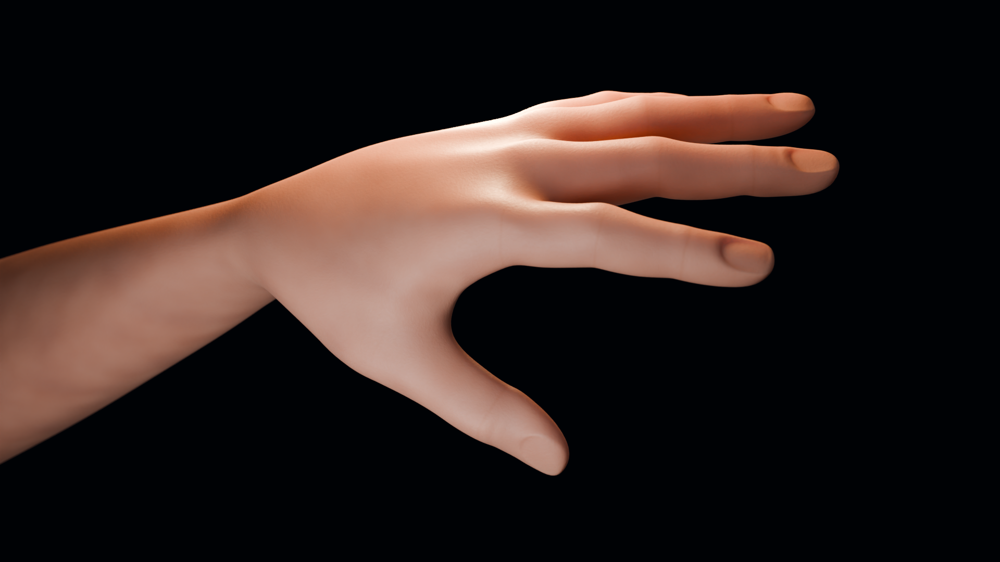
Our own nine-influence skinning on a free CC0 arm, reconstructed from 48 mesh poses and checked in Maya, Blender, Houdini and Unreal Engine 5.8. The arm’s normalized RMSE is approximately 0.067%. Render studies add material and lighting detail while retaining the accepted solver weights and poses.
Skin detail and subsurface scattering¶
The 1920 × 1080 Cycles closeup uses an 85 mm perspective camera, unchanged Designer texture exports, a real Poly Haven HDRI and rectangular softboxes. Rest-space shader detail adds complexion variation, fine pores, roughness and knuckle creases. These details are artist-authored; the free mesh is not a scan of biological tissue. Two presentation subdivision levels are excluded from numerical acceptance.
Identical backlight: SSS off |
SSS on, weight 0.25 and scale 2 mm |
|---|---|
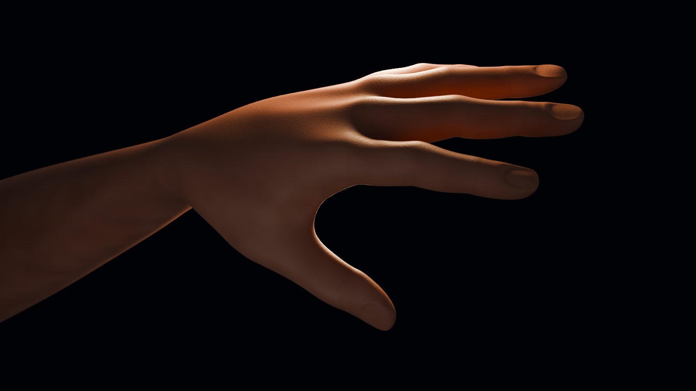 |
Both native 1600 × 900 renders use frame 12, the same camera, maps, lighting and 256 samples. Only SSS weight changes. Approximately 42.5% of visible pixels change by more than 0.01 in the displayed RGB channels. This is a controlled artistic demonstration, not measured skin scattering coefficients. The presentation uses 0.1 metres per fixture unit. Saved Blender scenes were reopened; all 48 rig poses and packed texture/HDRI byte hashes matched. Native material, render and reopen evidence records the settings and unmodified output hashes.
Steel reflections and rigid articulation¶
1280 × 720 MP4, 48 native frames retains more material detail than the GIF. Metallic steel, varied roughness, small surface scuffs and long softbox reflections make the link curvature visible. An 85 mm camera and softboxes track actual pose bounds; the rig, frame order and 12 fps timing are unchanged. One render subdivision level is presentation only.
Eight alternating links contain 2,560 numerical vertices and polygons. Each
source link has one rigid influence. Maximum relative Blender edge stretch is
0.002655%, below the 0.1% contract limit. The other three hosts also pass.
This is prescribed articulation, not a collision or dynamics simulation.
Show what the solver preserves¶
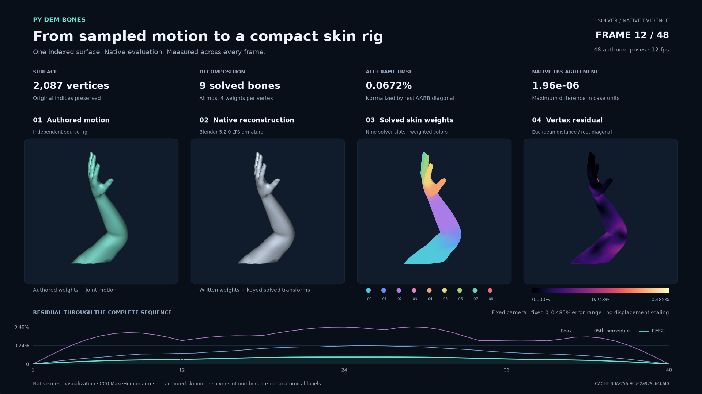
Watch the 48-frame evidence video · Metrics, fixed scales and provenance
The four views show authored source motion, the accepted Blender native
reconstruction, blended colors for nine solver weight slots, and actual
Euclidean vertex residuals. A single orthographic view and fixed error range
0–0.485221% of the rest bounding-box diagonal cover every frame. Geometry is
not displaced to amplify errors. This Matplotlib visualization uses original
vertex indices and cached native coordinates; it is separate from beauty
renders and fresh host acceptance.
The chain and tentacle are procedural fixtures inspired by SSDR. They do not reproduce measurements on the paper’s original datasets.
Unreal hand detail¶
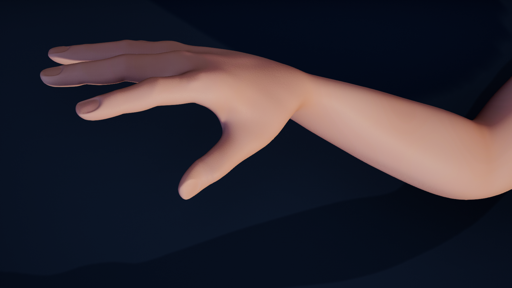
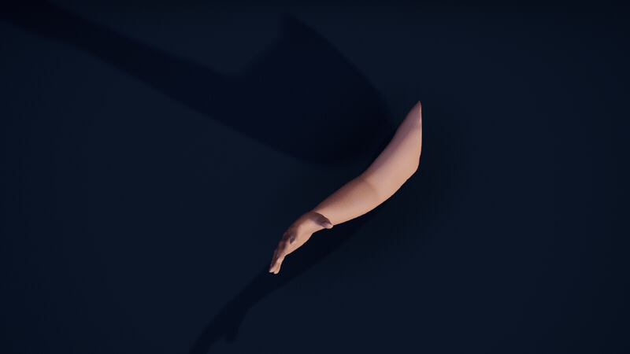
1280 × 720 MP4 · Hero receipt · 48-frame native capture receipt
Native HDRI, area lights, a lit graphite stage and Designer BaseColor, Roughness and Normal exports drive the real-time legacy Subsurface material. An independent GeometryScript Loop render proxy has 33,362 vertices; the numerical mesh remains 2,087 vertices. Native weight and all-pose readback match the accepted cache exactly before smoothing. The closeup frames the hand and wrist. This is a case-owned DynamicMesh SDK preview, not a SkeletalMesh/animation exporter or path-traced skin. The saved arm and chain maps were reopened through the official editor API; render-proxy geometry counts and native material references passed native readback.
Native steel chain¶
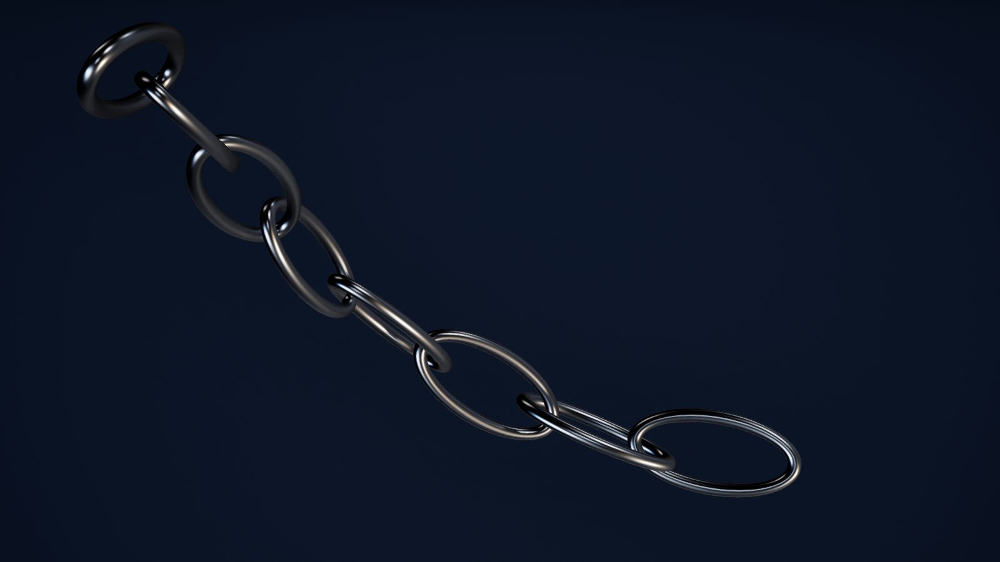
48-frame GIF · 1280 × 720 MP4 · Native capture receipt

Metallic steel at roughness 0.28 uses the specified HDRI reflection capture
and native scene reflections. Its 2,560-vertex numerical mesh is checked
before the independent 40,960-vertex Loop render proxy is built. The original
eight rigid links and all 48 accepted poses remain unchanged.
Houdini procedural motion study¶
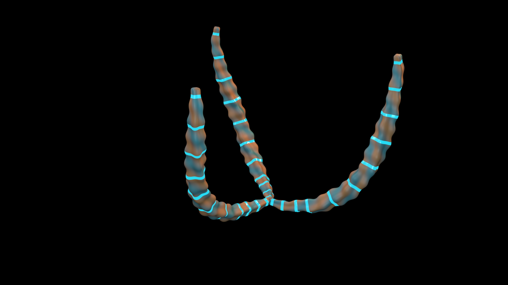
Three rotated display copies share the accepted eight-bone tentacle solve. Case-owned Python SOP LBS matches all 48 accepted poses exactly before two presentation subdivision levels. Procedural copper/teal colors, cyan emissive inlays and area lights create the sculpture. Camera keys follow the actual pose bounds and pass native readback. This is an artistic fixture using prescribed motion. Native still receipt records the completed frame-14 Mantra render, official OIDN filtering, display transfer and unchanged original EXR hash. The saved animation scene was reopened through the official API; all scalar weights and 48 original SOP poses matched its accepted cache exactly. Reopen evidence excludes presentation subdivision.
The new motion sequence remains pending; the interrupted six-frame attempt is excluded from public animation. The completed arm sequence below is separate.
Four-host deformation gallery¶
Blender 5.2 — Cycles source / reconstructed |
Maya 2026 — Arnold first pass |
|---|---|
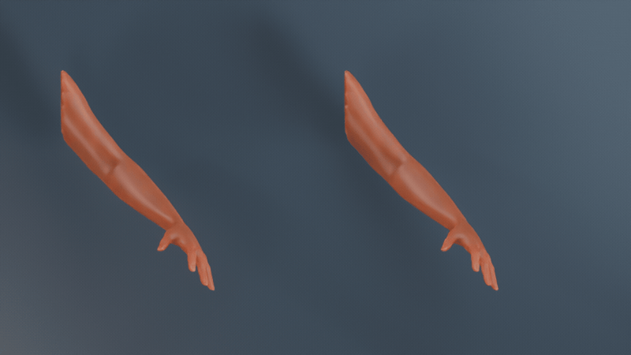 |
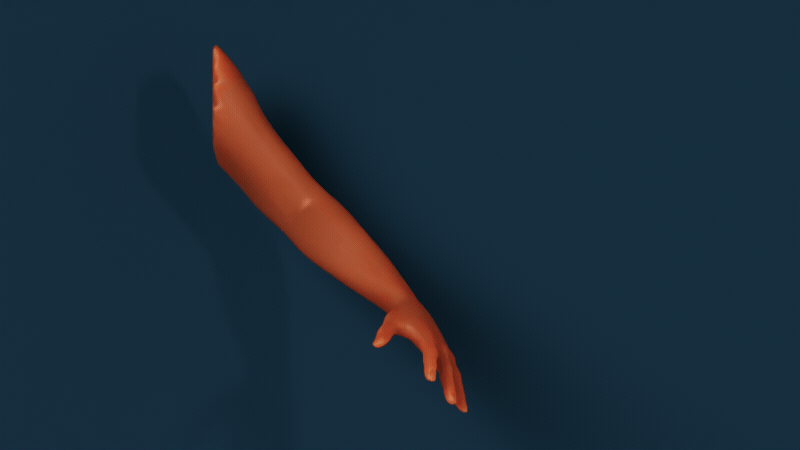 |
Houdini 22.0 — Mantra HDRI + SSS |
Unreal 5.8 — first HDRI/Subsurface preview |
|---|---|
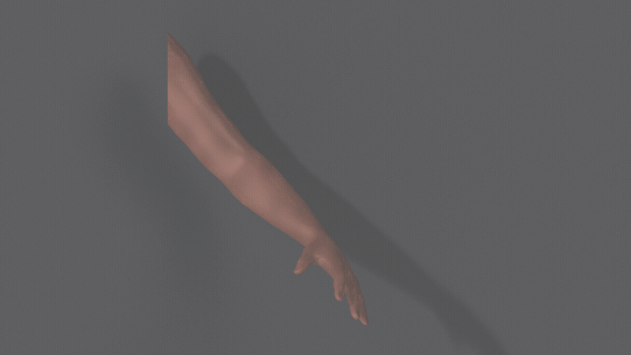 |
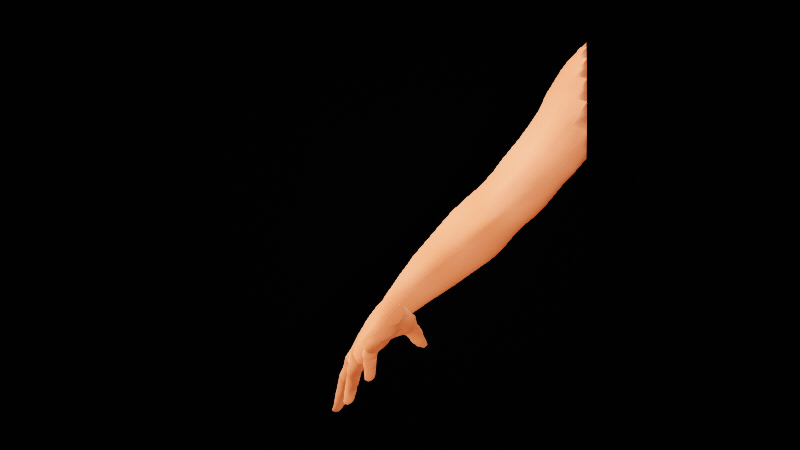 |
These complete GIFs contain 48 native frames at 800 × 450 and approximately four seconds at 12 fps. The Houdini display copy uses SideFX’s official color-only OIDN denoiser followed by an approximate gamma 2.2 transfer in full-range RGB; original linear EXRs remain intact. Other native pixels are encoded into GIF/MP4 display copies. No generated imagery, interpolated poses or geometry correction is used. Renderer transforms and preview scales differ; this is not a calibrated cross-renderer skin comparison.
Houdini OpenGL tentacle deformation · Original Cycles SSS pair · Original packed material readback


Maya retains its first Designer palette and SSS scale 0.09; its updated
look development has not passed native acceptance. Public native scene
delivery and full Designer graph capture remain separate pending items.
See validation and published file hashes.
Source mesh and our own skin weights¶
MakeHuman core graphical assets are CC0.
The source is pinned to commit a8bc2d54ff0ac92e78ff71431b1023eda42bf482.
We clip the body to an arm, weld boundary intersections and close the shoulder.
The original rig, skin weights and skin textures are excluded.
Provenance and hashes record
the exact source and modifications.
Our weight authoring uses shoulder, elbow, wrist, palm and five finger bases. An anatomical capsule falloff keeps at most four influences per vertex, then normalizes their sum. This is scripted weight authoring rather than a claim of interactive brush painting. Maya’s source skinCluster is written, read back and sampled for every pose. Blender independently evaluates a native source rig for the side-by-side presentation.
The solver receives ordered mesh poses and polygon connectivity. A hard nearest-center seed initializes nine regions; source joint transforms are not supplied to the solver. The animation is an approximation of those authored poses, rather than a scan of biological tissue or a captured actor.
Numerical validation¶
Host |
Native evaluation |
Arm normalized RMSE |
|---|---|---|
Maya 2026 |
skinCluster and keyed solved joints |
0.0672013% |
Blender 5.2.0 LTS |
armature and evaluated mesh |
0.0672015% |
Houdini 22.0.368 |
scalar weights and case-owned Python SOP LBS |
0.0672012% |
Unreal 5.8.0 |
DynamicMesh bone profile and case-owned SDK LBS |
0.0670133% |
Normalized RMSE is the root mean square Euclidean vertex error divided by the rest mesh bounding-box diagonal. Every host verifies all 48 frames, finite nonnegative weights, normalized weight sums, rigid rotations, and native evaluation against the solved linear blend skinning result. The cached native arrays were revalidated on 2026-09-30; this is separate from a fresh live-host run. The UE difference includes native bone-weight quantization.
Houdini uses the package’s scalar weight attributes plus an explicit example deformer, not a production boneCapture rig. Unreal uses a version-owned DynamicMesh bridge, not a SkeletalMesh or animation asset exporter. Render-only smoothing in all new studies is excluded from numerical checks.
MakeHuman uses decimeters internally.
Maya, Blender and Houdini retain the asset’s numeric coordinates in this case.
The current Unreal preview multiplies samples by 100, so it is ten times
the physical arm size in centimeters. Raw distance errors and scattering
scales are therefore not physically comparable across hosts. The normalized
metric remains independent of a uniform preview scale.


HDRI, SSS and renderer differences¶
The native equirectangular HDRI is Poly Haven Studio Small 09, CC0. Its unchanged 2K Radiance file and publisher digest are included. Blender uses an Environment Texture, Maya an Arnold sky dome with a Raw file texture, Houdini an environment light, and Unreal a native TextureCube on a SkyLight. Host-specific area/directional lights supplement the Blender, Maya and Unreal previews.
Renderer |
Bound SD maps |
Mapping / SSS |
|---|---|---|
Cycles |
Base Color, Roughness, Height |
rest-space box mapping ×3; Principled SSS weight 0.65; radius (1, 0.35, 0.18) |
Arnold |
Base Color, Roughness, Height |
Maya automatic UV projection ×3; standardSurface SSS weight 0.65; radius (1, 0.35, 0.2) |
Mantra |
Base Color |
rest-space planar UVs ×3; Principled SSS weight 0.65; roughness scalar 0.55 |
Unreal |
Base Color, Roughness |
native planar UV projection; legacy Subsurface model, opacity 0.45 |
The completed Cycles clip uses scatter scale 0.03; Arnold retains 0.09.
These are artistic scene settings, not
measured skin coefficients. Cycles uses denoising and 64 animation samples;
Arnold uses AA 3 and diffuse samples 2 with color-managed PNG output. The
Mantra animation uses 6 × 6 pixel samples; its frame-12 still uses 12 × 12.
Its linear EXR is displayed
with official color-only OIDN denoising and a full-range RGB gamma 2.2
transfer. Black is preserved. HDR values above one are clipped before the
8-bit display transfer; native EXRs remain intact. This is not ACES or an
identical cross-renderer color transform. Unreal uses HDRI intensity 0.5, half the example’s
directional light intensities and manual exposure bias 1.0. Its native
ImageWriteBlueprintLibrary exports all 48 PNGs synchronously, with valid
chunk CRCs and no trailing bytes; source images are preserved unchanged.
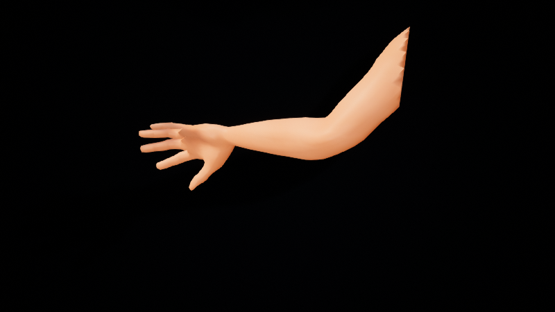
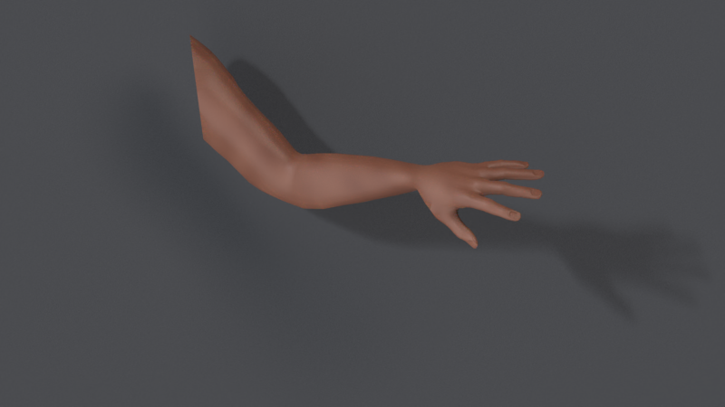
The background Mantra job verified all 48 new EXR files with zero warnings. The earlier interrupted sequence is excluded. Blender’s relative packed textures have passed native scene reopen and byte readback. Public native scene delivery, UV/tangent review and the updated Maya sequence still require acceptance.
Reproduce and resume¶
Follow the DCC-MCP example guide. Use a disposable scene/project, a wheel matching the host’s Python ABI, and an exactly selected live DCC-MCP instance. Application UI uses the project DCC-CUA route only when the official application API cannot express the operation. When an official API exists but DCC-MCP lacks a tool, implement and validate the typed adapter capability first. Maya and Houdini startup integration repairs are tracked in the owning adapters. Official Hython headless rendering is available; its 48-pose SOP readback matches the accepted geometry cache exactly. The updated native scene is saved.